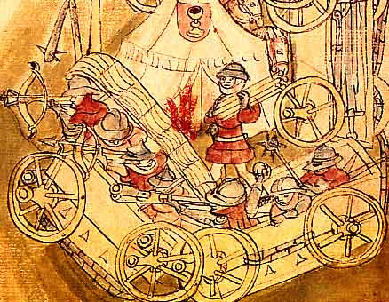
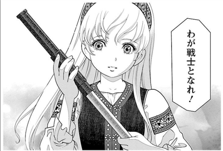

『乙女戦争 ディーヴチー・ヴァールカ』
公開日：
1420年、ボヘミア王国。戦争により家族を虐殺された12歳の少女シャールカは、フス派義勇軍の英雄ヤン・ジシュカに導かれ、仲間たちと共に反カトリックの戦いに身を投じていく。15世紀、中央ヨーロッパで起こり「宗教改革」の端緒となった「フス戦争」をモチーフに、少女の視点で、史実に基づいた凄惨な戦争を描く歴史巨編!!
ヨーロッパが中世の永い眠りから覚め、近代の重い扉を押し開けようともがいていた時代。ボヘミア（チェコ）では、人々が魂の自由を勝ち取るための戦いにその身を投じていました。ルターにの“革命”に先駆けて行われた宗教戦争、フス戦争です。

フス戦争（チェコ語: Husitské války、ポーランド語: Wojny husyckie、ドイツ語: Hussitenkriege、イタリア語: Crociata Hussita）は、15世紀に中央ヨーロッパで起こった戦争。ヤン・フスの開いたキリスト教改革派のフス派（プロテスタントの先駆）の信者（ボヘミアとポーランドを中心とする）と、それを異端としたカトリック、神聖ローマ帝国の間で戦われた。
きっかけは、プラハ大学の神学教授ヤン・フスが唱えた教会改革論でした（ヤンは英語で言うところのジョンです）。フスはオックスフォード大学のジョン・ウィクリフの影響を受け（名前が一緒なので気が合ったのでしょうかｗ）、腐敗した教会を痛烈に批判しました。当時のプラハは神聖ローマ帝国の首都になることもあったヨーロッパ有数の都市でした。また、プラハ大学は帝国領ではじめて設立された大学でもあります。そうした進歩的な雰囲気の中、チェコ語を使ったフスの説法は市民の間へ瞬く間に浸透し、熱い支持を集めるようになります。
しかし1414年、神聖ローマ皇帝ジギスムントによって開催されたコンスタンツ公会議で、フスは異端に認定。火刑に処されてしまいます（このほかにも、この公会議では当時分裂していたローマ教会の統一などが図られています）。これにプラハのフス派は激怒。当時のドイツ人市長がフス派を市政から追い出そうとしたのをきっかけに不満が爆発し、第一次プラハ窓外投擲事件が発生します。
文字通り、市長が市役所の窓からポイされてしまったのです（同じような事件はまた起こるので、プラハの人はこういうのが好きなのかもしれない）。カトリックとフス派の調停に心を砕いていたボヘミア王ヴァーツラフ4世（ジギスムントのお兄さん）はこれを聞いてショックで急死。ジギスムントがボヘミアの王冠を頂くことになると、これに抵抗するプラハ市民との間で全面的な戦争へ発展してしまいました。
異端を根絶やしにしろとばかりに、周りの国から次々と送り込まれる十字軍（十字軍はべつに中東でイスラム教徒とばかり戦っていたわけではありません！ 異端と戦うのがお仕事なのです）。無敵の重装騎兵に、プラハ市民はなすすべがありませんでした。
そこに登場したのが、“騎士殺し”の異名を持つヤン・ジシュカ。彼はフス派信徒を組織化し、新兵器「ピーシュチャラ（ピストルの語源。原始的なハンドキャノン）」と「ターボル（荷車を野戦防御に利用した、現在の戦車・装甲車のようなもの）」を駆使して、十字軍相手に勝利をおさめます。

『乙女戦争 ディーヴチー・ヴァールカ』は、少女シャールカの目から見たジシュカとフス戦争を描いた歴史漫画です。

一見かわいらしい少女漫画かな？ といった趣なのですが、ページをめくるとかわいいのは女の子だけ。宗教戦争物としてはよくあることですが、強姦・虐殺・処刑・拷問・乱交のシーンもあり、不快に感じる人も少なくないのではないかと思います。けれど、ストーリーは骨太で、中世の戦争もよく描けていると思います。騎士の時代を終わらせ、ナポレオンの国民軍の先駆けともなったジュシカの軍隊。今後の活躍にも目が離せません！
![[まとめ買い] 乙女戦争 ディーヴチー・ヴァールカ](http://ecx.images-amazon.com/images/I/D1VsUQCoMdS._SL160_.png "[まとめ買い] 乙女戦争 ディーヴチー・ヴァールカ")
- 作者: 大西巷一
- メディア: Kindle版
- この商品を含むブログ (2件) を見る